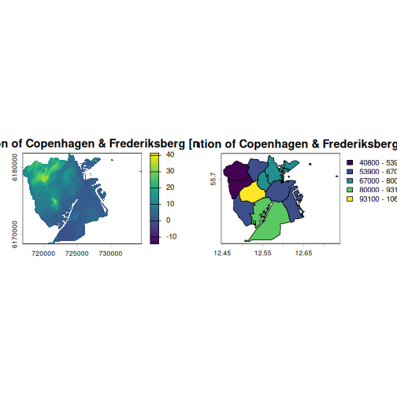
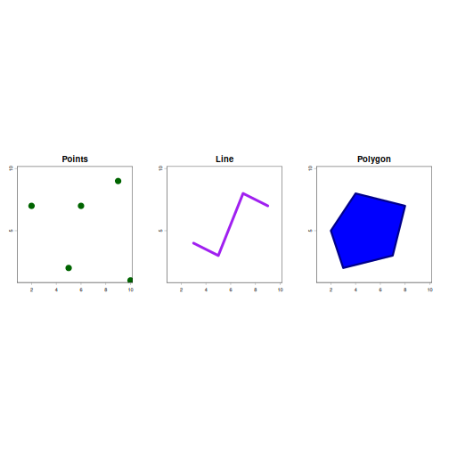

Introduction to Spatial Data Science
Last updated on 2026-07-23 | Edit this page
Estimated time: 84 minutes
Overview
Questions
- FIXME
Objectives
- FIXME
Spatial data
Spatial refers to things relating to or occupying space, and how physical objects, environments and data relate to each other. It describes the physical, 3D-layout of the world around us.
Spatial data science
Spatial Data Science is the subset of data science that focuses on the characteristics of spatial data. It treats location, distance, and spatial interactions as core aspects of the data.
The most common output is maps that reveal spatial patterns.
Issues in spatial data science
- “Everything is related to everything else, but near things are more related than distant things”). Tobler’s first law of geography.
- Handling geometries on the sphere and on the flat plane.
- Spatial aggregation may affect the result (modifiable areal unit problem).
Spatial data representation
Raster data - we can think of them as pixels or a grid of cells.
Vector data - geometries, like points, lines, circles and polygons. Often with associated attributes.
One is not inherently better than the other - they serve different purposes.
R
library(terra)
OUTPUT
terra 1.9.27R
par(mfrow = c(1, 2))
f <- "data/dhm_koebenhavn_frederiksberg_10m.tif"
r = rast(f)
plot(r, main = "Elevation of Copenhagen & Frederiksberg [m]")
f <- "data/bydele_and_frederiksberg.gpkg"
v = vect(f)
plot(v, "befolkning", main = "Population of Copenhagen & Frederiksberg")

Raster model
The raster model consists of columns, rows and cells. Each cell represents a specific geographic area, and its values represents particular characteristics, in this example the elevation. Rasters can contain multiple dimensions, e.g. temperature, spectral bands etc.
Rasters are rather similar to photographs. The file in this example is a tiff file, commonly used for lossless storage of images. The raster differs from images by havin a spatial extend - the geographic area covered by the raster, a spatial resolution, in the raster used here, the resolution is 10x10 meters. Each cell in the raster therefore represents an area of 10x10 meters on the ground. Rasters also have a coordinate reference system.
Rasters contain, depending on the data we work with, either qualitiative or quantitative data.
Vector model
The vector model represents geographic objects, using coordinates. All vector data is build from (up to) three basic geometric shapes (often called features):
- Points - a single set of coordinates, representing a specific location in space, either in 2D or 3D.
- Lines - a set of ordered points, called vertices, connected by straigth segments. Lines have length but not area
- Polygons, a closed shape, defined by 3 or more vertices, where the first and last points are identical, connected by lines, enclosing an area on a map. These have both a perimeter (length) and an area.
R
x = sample(1:10, size = 5, replace = TRUE)
y = sample(1:10, size = 5, replace = TRUE)
pts = cbind(x, y)
pts = vect(pts, type = "points")
R
line = matrix(c(
3, 4,
5, 3,
7, 8,
9, 7
), ncol = 2, byrow = TRUE)
line = vect(line, type = "lines")
R
poly = matrix(c(
3, 2,
2, 5,
4, 8,
8, 7,
7, 3,
3, 2
), ncol = 2, byrow = TRUE)
poly = vect(poly, type = "polygons")
R
par(mfrow = c(1, 3))
plot(pts, pch = 19, main = "Points", col = "darkgreen", xlim = c(1, 10),
ylim = c(1, 10), cex = 1.8)
plot(line, col = "purple", lwd = 4, main = "Line", xlim = c(1, 10),
ylim = c(1, 10))
plot(poly, col = "blue", border = "darkblue", lwd = 3, main = "Polygon",
xlim = c(1, 10), ylim = c(1, 10))

Examples of data
Raster: Satellite imagery, land cover maps, elevation models. Formats: GeoTIFF, NetCDF, JPEG2000
Vector: Country borders, roads and rivers, store locations. Formats: Geopackage (GPKG), Shapefile (SHP), GeoJSON
Coordinate Reference System
The Earth is a globe, and our screen is flat. Converting a 3D object like Earth to a 2D map will introduce distortions.
The conversion can be done in several different ways, called projections. No projection is inherently better than another, but they have different strengths and weaknesses, and influence the interpretation of data on the map in different ways.
In addition to the different transformations from 3D to 2D, distortions are introduced by continental drift, leading to a need for regular updates in order to keep borders and locations up to date.
These transformations, projections and distortions are collected into Coordinate Reference Systems (CRS).
Problems arise if different spatial data is stored in different systems.
Two kinds of CRS exists. A geographic system, describing positions on the curved surface of the globe. These are rather precise representations of the world, but not very useful for calculating distances and areas.
Projected CRS have the curved surface projected to a flat 2D coordinate system. These systems are useful for calcualtin distances and areas and are easy to show on a 2D screen og paper map.
Both comes in different versions, accounting for continental drift, and are denoted with codes like “EPSG:4326”, or “EPSG:3857”.
The specific choice of CRS in a given application is important, but even more important is to make sure that when we combine data, we use the same CRS in both sets of data.
ERROR
Error in `h()`:
! error in evaluating the argument 'x' in selecting a method for function 'project': object 'world' not found- FIXME